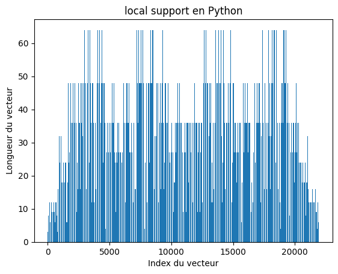
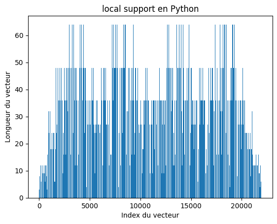
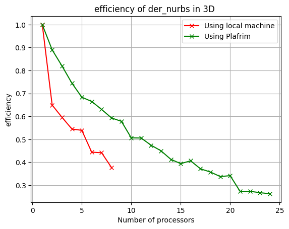
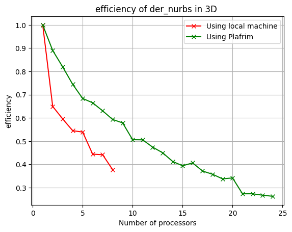

To begin with, over 50 functions were implemented and tested. Validation was carried out in stages. First, validation of Local support produced by the first part of the python code, then validation of Local support and BF support in 2D and 3D, and finally validation of Der_Topo.
2D Validation
Local Support Matrix in C and Python for 2D
The first test is carried out in 2D and after a comparison between the Local Support values we have our three outputs (Local_support, BF_support, and IND_Mask_Active). The overall error is almost zero except for BF_support, for which it is 10^-10. The conclusion to be drawn is that our code is conformatic in 2D.
3D Validation
 

Local Support Matrix in C and Python for 3D
In the same way as in 2D, we carry out tests in 3D, comparing our new outputs (Local_support, BF_support, IND_Mask_Active, der_W, der_CP, BF_Mask). The final error is of the order of 10^-7, which validates all our code. However, some functions could not be finalized in 2D but in 3D, the exploration of parallelism through OpenMP was developed.
3D OpenMP
 

Calculation of Speed-up & Efficiency for 3D implementation of der_Nurbs

Calculation of Speed-up & Efficiency for 3D implementation of local_support function
2D OpenMP
Calculation of Speed-up & Efficiency for 2D implementation of der_Nurbs
Performance Summary
Performance Summary